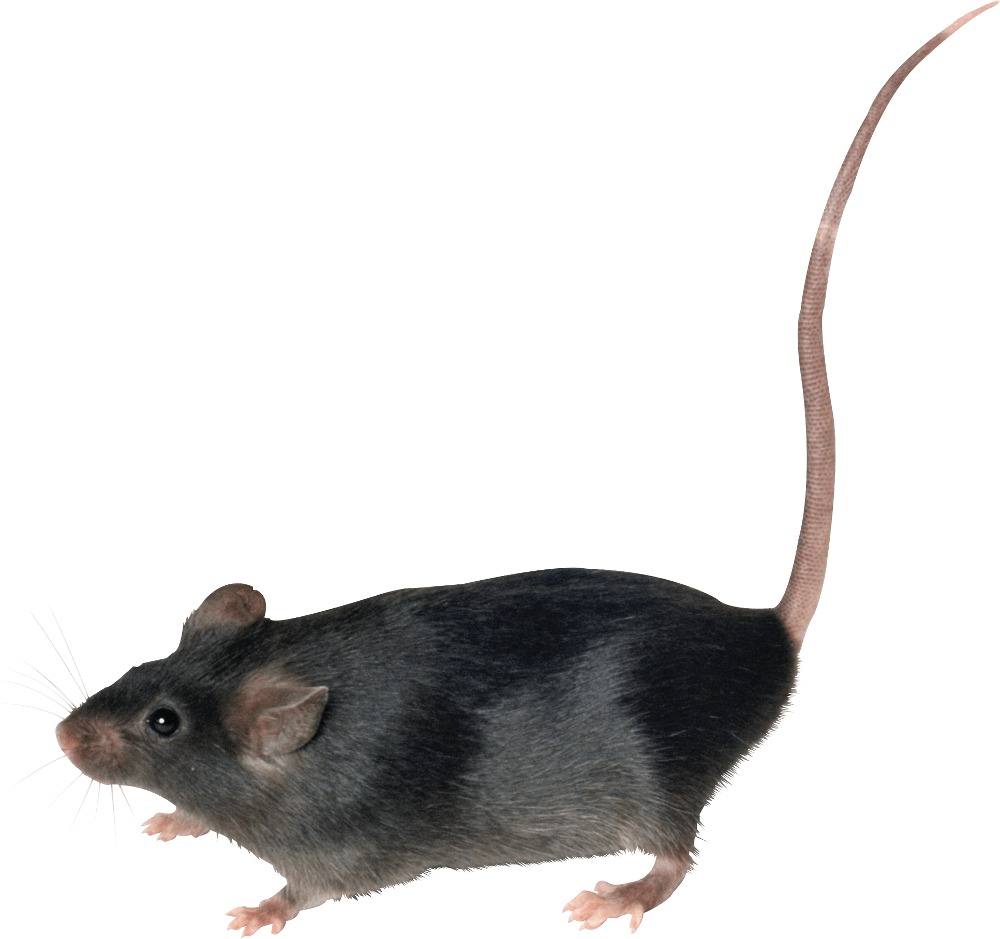
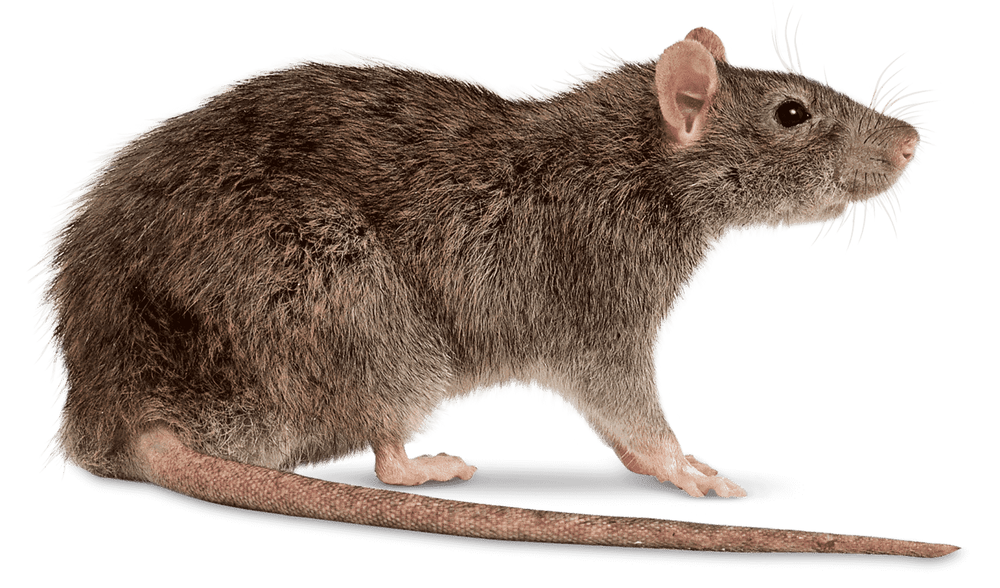
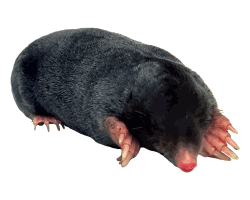

Что такое дератизация
Комплексные меры по уничтожению грызунов-вредителей в помещениях и на
открытых
территориях. Грызуны - переносчики массы опасных заболеваний,
являются угрозой
для домашних питомцев, портят имущество и продукты питания. Для
эффективной
борьбы с грызунами необходимо вмешательство профессионалов, так как
самостоятельное уничтожение является сложным, опасным и зачастую
невозможным
из-за объемов популяций. Уничтожение грызунов может быть как разовой
услугой,
так и проводиться на постоянной основе.
Методы дератизации
Физический метод
дератизации применяется издавна и является наименее опасным для
человека.
Сущность его сводится к вылавливанию грызунов с помощью тех или иных
механических приспособлений.
Химический метод дератизации является наиболее эффективным и распространенным. Сущность его сводится к использованию различных ядовитых веществ. Химические препараты, применяемые для уничтожения грызунов, объединяются одним общим термином - «ратициды» или «родентициды».
Биологический метод дератизации предусматривает использование животных и птиц (естественных врагов грызунов) и бактериологических культур, патогенных для грызунов и безопасных для людей.
Химический метод дератизации является наиболее эффективным и распространенным. Сущность его сводится к использованию различных ядовитых веществ. Химические препараты, применяемые для уничтожения грызунов, объединяются одним общим термином - «ратициды» или «родентициды».
Биологический метод дератизации предусматривает использование животных и птиц (естественных врагов грызунов) и бактериологических культур, патогенных для грызунов и безопасных для людей.
«Дезэффект» оказывает следующие
услуги
по дезинфекции:

Профилактическая дезинфекция предприятий и
других объектов различных категорий

Расчёт потребности в дезинфекционных
средствах

Очаговая дезинфекция помещений

Дезинфекционные мероприятия после
длительного
нахождения в помещении трупа